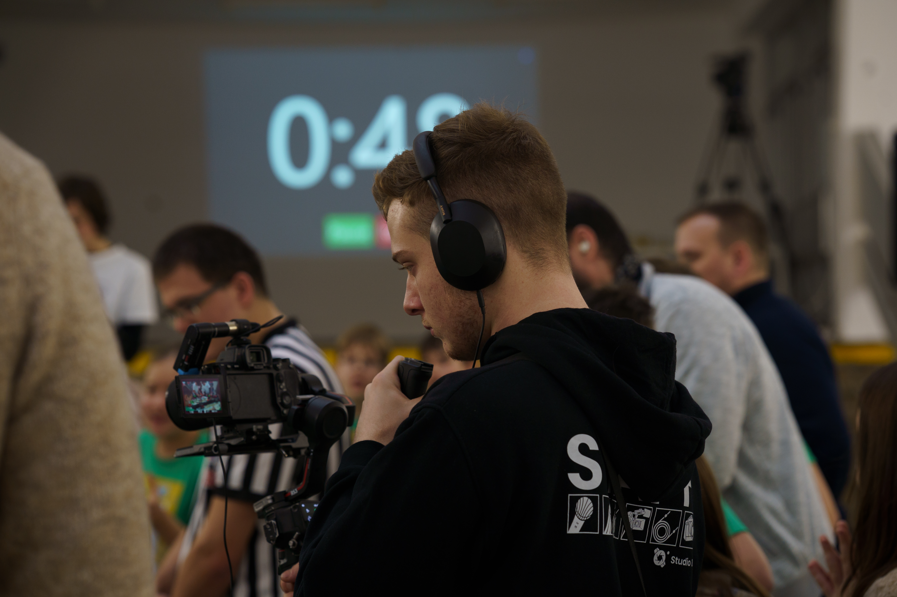

Natáčam, fotím a strihám. Pomáham firmám, tvorcom aj jednotlivcom pripraviť videá a fotografie na web, sociálne siete či vlastné projekty.
Napíš miSom David, videograf a fotograf z Bratislavy. Natáčam a strihám videá od prvého nápadu až po odovzdanie. Okrem videa fotím portréty, street fotografiu a podujatia. Pôsobím najmä v Bratislave a okolí.
Pomôžem s nápadom a zábermi, natočím materiál a pripravím hotové video.
Fotím produkty, portréty aj podujatia pre firmy a jednotlivcov.
Strihám videá, upravujem farby a zvuk. Výstup pripravím pre Instagram, TikTok alebo web.
Povieš mi, čo potrebuješ a na čo bude video alebo fotenie použité. Deadline si dohodneme spoločne.
Spolu si ujasníme štýl, náladu a zábery. Ak nemáš jasnú predstavu, navrhnem koncept podľa tvojej značky a prostredia.
Prídem na miesto s vlastnou technikou (kamera, gimbal, mikrofón) a natočím alebo nafotím materiál.
Zostrihám video, pridám hudbu, titulky a farebnú korekciu a pripravím ho pre sociálne siete alebo web.
Dostaneš hotový výstup a spoločne doladíme úpravy, aby si bol so všetkým spokojný.

Volám sa David a venujem sa videu, fotografii a strihu.
Videu a fotografii sa venujem už pár rokov a stále sa v tom snažím zlepšovať. Najviac ma baví samotné natáčanie a fotenie, vymýšľanie záberov a potom úprava výsledku.
Študujem multimédiá, takže sa k tvorbe dostávam aj v škole a môžem na sebe stále pracovať.
Pri každom projekte mi záleží na tom, aby zábery nielen dobre vyzerali, ale aj dávali zmysel.
Cena závisí od typu a rozsahu projektu, preto ju vždy určujem individuálne. Napíš mi, čo potrebuješ, a poviem ti, koľko by to stálo.
Hlavne v Bratislave a okolí. Ak je projekt ďalej, dopravu mimo Bratislavy dohodneme vopred. Mimo Slovenska necestujem.
Áno. Dodáš mi nahrávky a ja zabezpečím strih, hudbu, titulky aj farebnú korekciu.
Záleží na tom, kde ho budeš používať. Pre Instagram a TikTok najčastejšie 9:16, pre web a YouTube 16:9. Podľa potreby pripravím aj oba formáty.
Termín dohodneme vopred podľa rozsahu projektu. Ak potrebuješ výstup rýchlejšie, vieme sa dohodnúť na skrátenom termíne.
Napíš mi, čo plánuješ, čo potrebuješ a kedy to má byť hotové. Ozvem sa čo najskôr.
Cookies používam na zobrazenie videí z YouTube a na anonymnú štatistiku návštevnosti (Google Analytics). Môžeš ich povoliť všetky, odmietnuť alebo si vybrať v nastaveniach.
Vyber, ktoré cookies chceš mať zapnuté. Nastavenia nájdeš kedykoľvek v pätičke stránky.
Potrebné na základné fungovanie stránky. Nedajú sa vypnúť.
Potrebné na zobrazenie videí z YouTube v portfóliu. Prehrávač YouTube (Google) môže ukladať vlastné cookies.
Anonymná štatistika návštevnosti. Pomáha mi zistiť, ktoré časti webu sú užitočné.